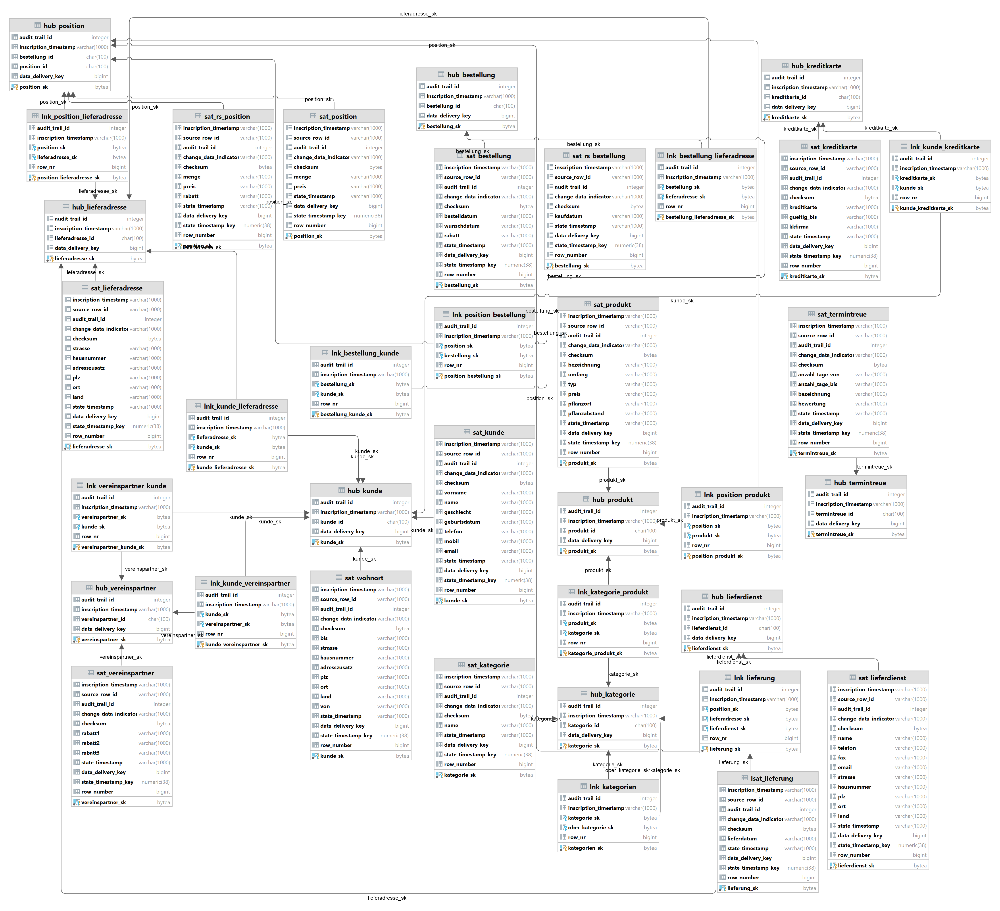
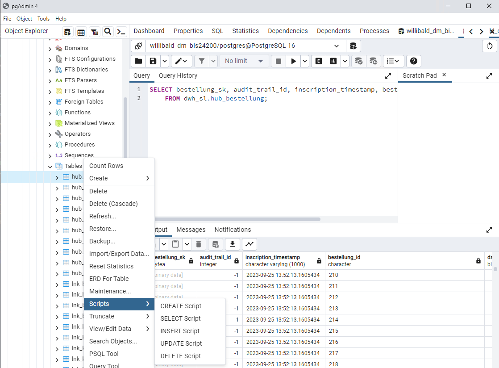
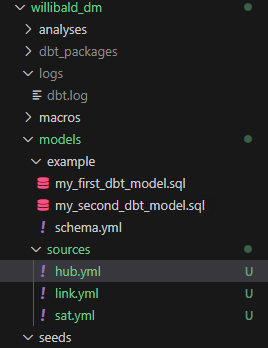
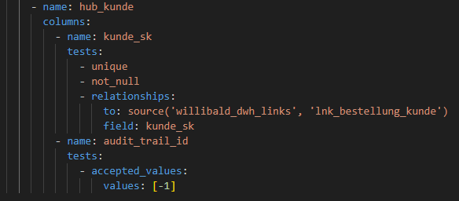
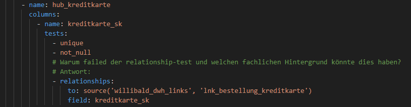
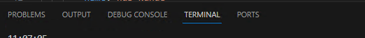
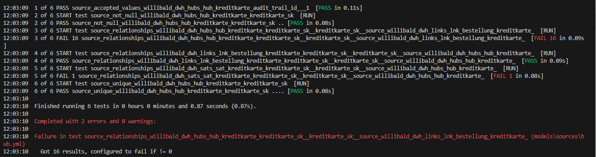
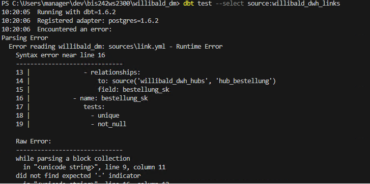

Verschaffen Sie sich einen Überblick über die Tabellen im Schema dwh_sl. Diese Tabellen bilden das DWH-Datenmodell der Übung.

Auf dem Server ist pgAdmin installiert. Damit können Sie alle Tabellen, Views und Daten in Ihrer Datenbank anzeigen.
Per Rechtsklick auf eine Tabelle können Sie ein Select-Skript erzeugen, um die Daten anzeigen zu lassen.

Recherchieren Sie im Internet, Ihren Data Warehousing Vorlesungsunterlagen oder folgenden Links, um sich mit der Data Vault Modellierung vertraut zu machen.
Die Dateien können Sie in Ihrem dbt-Projekt in den folgenden Pfad kopieren:

Jedes Objekt wird in der yml nach dem gleichen Muster angelegt

Es existieren 4 Standardtests in dbt:
In den yml-Dateien werden 5 Fragen gestellt. Bitte versuchen Sie diese zu beantworten. Per Hashtag können Sie Zeilen in yml-Dateien auskommentieren.


Wenn ein Test fehlschlägt heißt dies nicht, dass Sie einen Fehler gemacht haben. Der Test hat Probleme oder Fehler in den Daten gefunden. Hier ein Beispiel:

Die Zahl hinter dem FAIL zeigt die Anzahl der Zeilen an, welche den Test nicht bestanden haben.
Wenn Sie einen Fehler im Code gemacht haben, zeigt dbt dies mit einem Error an. Hier ein Beispiel:

In diesem Fall enthält eine yml-Datei einen Syntaxfehler.